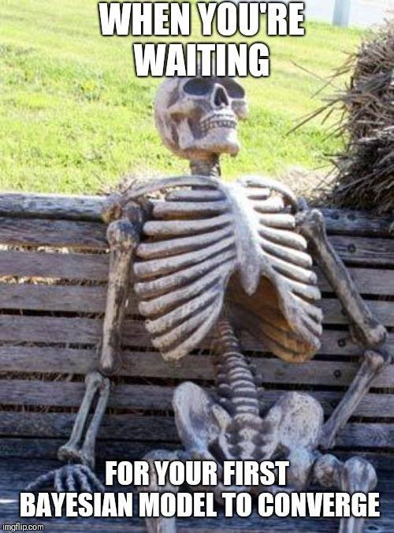
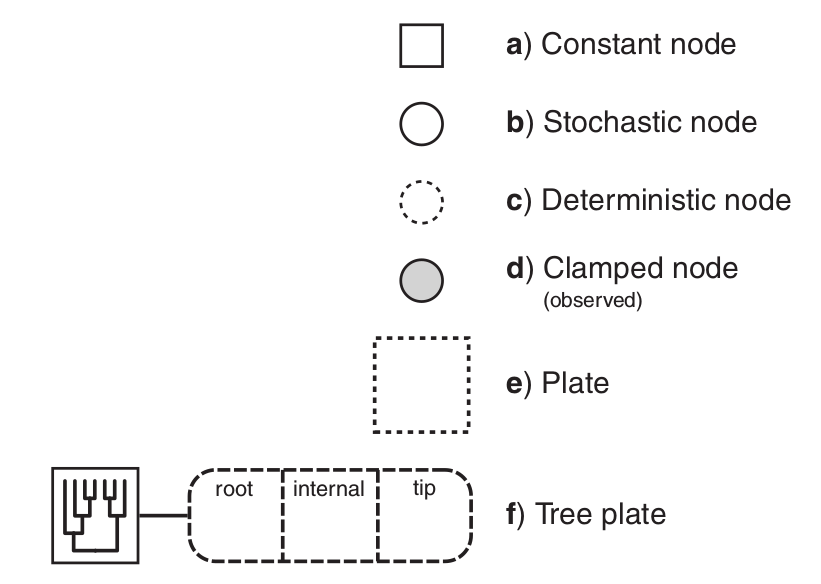
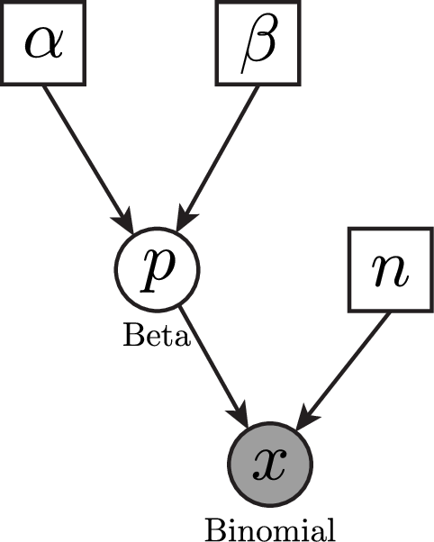

Apuntes sobre RevBayes
Introducción a la Inferencia Bayesiana
La inferencia bayesiana es un enfoque de la estadística que permite actualizar nuestra información sobre un parámetro desconocido a medida que observamos nuevos datos. Se basa en el Teorema de Bayes, que combina la información previa con la evidencia observada.
El Teorema de Bayes se expresa matemáticamente como:
\[ P(\theta \mid D) = \frac{P(D \mid \theta)P(\theta)}{P(D)} \]
donde:
- \(P(\theta \mid D)\) es la distribución posterior del parámetro \(\theta\) después de observar los datos \(D\).
- \(P(D \mid \theta)\) es la verosimilitud (likelihood): la probabilidad de observar los datos \(D\) dado un valor del parámetro \(\theta\).
- \(P(\theta)\) es la distribución prior, que representa la información o supuestos sobre \(\theta\) antes de observar los datos.
- \(P(D)\) es la evidencia o verosimilitud marginal, que actúa como factor de normalización.
El objetivo de la inferencia bayesiana es obtener la distribución posterior, que muestra qué valores del parámetro \(\theta\) son más plausibles después de considerar tanto la información previa como los datos observados.
Diferencia entre Inferencia Bayesiana y Máxima Verosimilitud
| Máxima Verosimilitud (MV) | Inferencia Bayesiana | |
|---|---|---|
| Objetivo | Encontrar el valor de \(\theta\) que maximiza \(P(D \mid \theta)\) | Obtener \(P(\theta \mid D)\) |
| Prior | No | Sí |
| Resultado principal | Estimación puntual de \(\theta\) | Distribución posterior de \(\theta\) |
| Incertidumbre | Se estima mediante procedimientos adicionales | Está representada directamente por la distribución posterior |
En máxima verosimilitud buscamos el valor de \(\theta\) que hace que los datos observados sean más probables. En inferencia bayesiana obtenemos una distribución de valores plausibles de \(\theta\) después de considerar los datos.
¿Qué es RevBayes?
RevBayes es un programa y lenguaje probabilístico diseñado para construir modelos estadísticos, especialmente modelos utilizados en inferencia filogenética bayesiana.
Principales características de RevBayes:
- Utiliza modelos gráficos probabilísticos.
- Su lenguaje, Rev, tiene una sintaxis que recuerda a R, pero sus operadores tienen significados específicos dentro del modelo probabilístico.
- Permite definir relaciones entre variables mediante nodos.
- Utiliza métodos de Markov Chain Monte Carlo (MCMC) para obtener muestras de distribuciones posteriores complejas.
- Permite construir modelos filogenéticos de manera modular y explícita.
¿Qué es el Muestreo MCMC?
El MCMC (Markov Chain Monte Carlo) es un conjunto de métodos computacionales utilizados para obtener muestras de distribuciones de probabilidad complejas.
En inferencia bayesiana se utiliza principalmente para aproximar la distribución posterior cuando esta no puede calcularse directamente.
¿Por qué se necesita MCMC?
La distribución posterior de un parámetro \(\theta\) se obtiene mediante:
\[ P(\theta \mid D) = \frac{P(D \mid \theta)P(\theta)}{P(D)} \]
La evidencia \(P(D)\) requiere integrar sobre todos los posibles valores del parámetro:
\[ P(D) = \int P(D \mid \theta)P(\theta)\,d\theta \]
En modelos sencillos esta integral puede resolverse analíticamente, pero en modelos complejos puede ser muy difícil o computacionalmente intratable.
MCMC permite obtener muestras de una distribución proporcional a:
\[ P(\theta \mid D) \propto P(D \mid \theta)P(\theta) \]
sin necesidad de calcular directamente el término de normalización \(P(D)\).
¿Cómo funciona MCMC?
De manera general, un MCMC construye una cadena de valores de los parámetros:
- Empieza en un valor inicial del parámetro.
- Propone un nuevo valor.
- Decide si acepta o rechaza la propuesta.
- Repite el proceso muchas veces.
Después de que la cadena alcanza una región estacionaria y explora adecuadamente el espacio de parámetros, las muestras retenidas pueden utilizarse para aproximar la distribución posterior.
Un número grande de iteraciones por sí solo no garantiza que una cadena haya convergido. Es necesario evaluar su comportamiento mediante diagnósticos como las trazas y el tamaño de muestra efectivo (ESS).
Un método común de MCMC: Metropolis-Hastings
El algoritmo de Metropolis-Hastings es un método de MCMC que permite generar muestras de una distribución posterior.
- Parte de un valor inicial del parámetro \(\theta\).
- Propone un nuevo valor \(\theta^*\).
- Evalúa qué tan probable es ese nuevo valor considerando los datos observados y la distribución prior.
- Decide si acepta o rechaza el nuevo valor.
- Repite este proceso muchas veces, formando una cadena de valores.
El algoritmo favorece valores con mayor probabilidad posterior, pero también puede aceptar valores menos probables. Esto permite que la cadena explore diferentes regiones del espacio de parámetros y evita que quede atrapada en una sola región.
Después de suficientes iteraciones y una adecuada exploración del espacio de parámetros, las muestras obtenidas pueden utilizarse para aproximar la distribución posterior.
¿Cómo saber si una cadena ha convergido?

Algunos diagnósticos útiles son:
- Inspección visual de las trazas: una buena traza fluctúa alrededor de una región estable y no presenta tendencias persistentes.
- Tamaño de muestra efectivo (Effective Sample Size, ESS): las muestras consecutivas de un MCMC suelen estar correlacionadas. El ESS estima cuántas muestras independientes equivalentes contiene la cadena.
Una forma común de expresar el ESS es:
\[ ESS = \frac{N} {1 + 2\sum_{k=1}^{\infty}\rho_k} \]
donde \(N\) es el número de muestras retenidas y \(\rho_k\) es la autocorrelación para el retraso \(k\).
Un ESS alto indica que la cadena contiene una mayor cantidad de información independiente. En filogenética, un valor de ESS > 200 se utiliza comúnmente como una referencia práctica de buen muestreo.
Sin embargo, un ESS alto no demuestra por sí solo la convergencia. Debe interpretarse junto con las trazas y, cuando sea posible, con la comparación de cadenas independientes.
Un ESS bajo puede indicar una alta autocorrelación, pocas iteraciones o movimientos MCMC poco eficientes.
Para visualizar las trazas, el ESS y otros resúmenes de la posterior se puede utilizar Tracer:
Modelos Gráficos en RevBayes
En RevBayes, un modelo gráfico probabilístico representa las relaciones entre las variables de un modelo. Las variables se representan mediante nodos y sus dependencias mediante conexiones entre ellos.

RevBayes distingue tres tipos principales de nodos: constantes, estocásticos y deterministas. Además, un nodo estocástico puede fijarse a un valor observado mediante clamp(), y los plates representan estructuras repetidas.
Nodos constantes
Son valores fijos dentro del modelo. No tienen incertidumbre.
n <- 10 # Número de observacionesEl operador <- crea una variable constante dentro del modelo.
Nodos estocásticos
Representan variables aleatorias asociadas a una distribución de probabilidad.
theta ~ dnBeta(2,2) # Prior Beta(2,2)En este caso, theta es una variable estocástica con una distribución Beta.
Nodos deterministas
Son valores calculados a partir de otros nodos del modelo.
mu := theta * nAquí, mu depende de los valores de theta y n.
Nodos observados o clamped
Los datos observados se incorporan fijando una variable estocástica a un valor mediante .clamp().
D ~ dnBinomial(p=theta, size=n)
D.clamp(7)Aquí, D sigue una distribución Binomial, pero observamos exactamente 7 éxitos.
Plates
Los plates representan una estructura del modelo que se repite varias veces. En RevBayes pueden implementarse mediante un ciclo for.
for (i in 1:10) {
theta[i] ~ dnBeta(2,2)
}Aquí se crean 10 variables estocásticas theta[i], todas con una distribución Beta(2,2).
Operadores de asignación en RevBayes
| Operador | Uso |
|---|---|
<- |
Variable constante del modelo |
~ |
Variable estocástica |
:= |
Variable determinista |
.clamp() |
Fija datos observados a una variable estocástica |
= |
Variable del workspace; no forma parte del modelo probabilístico |
En RevBayes, <- y = no son equivalentes. Por ejemplo, n <- 10 crea una constante del modelo, mientras que moves[1] = ... crea o modifica una variable utilizada por el programa para configurar la inferencia.
📊 Ejemplo: Micheladas en Tepito
Queremos estimar la probabilidad \(p\) de que un estudiante disfrute del ambiente en las micheladas en Tepito.
Hemos recopilado la siguiente información:
- 10 estudiantes fueron encuestados.
- 7 disfrutaron el ambiente y 3 no lo disfrutaron.
- Queremos estimar la probabilidad de éxito para un nuevo estudiante comparable con los estudiantes encuestados.
🔹 1. Definiendo el modelo
📌 Distribución prior
Antes de observar los datos, necesitamos expresar qué valores de \(p\) consideramos plausibles. Como \(p\) es una probabilidad, solamente puede tomar valores entre 0 y 1.
Por esta razón utilizamos una distribución Beta, ya que está definida en el intervalo \([0,1]\) y es muy flexible para representar diferentes creencias previas sobre una probabilidad.
En este ejemplo utilizaremos:
\[ p \sim \text{Beta}(8,2) \]
¿Por qué elegimos \(\text{Beta}(8,2)\)?
Los parámetros de una distribución Beta son \(\alpha\) y \(\beta\):
\[ p \sim \text{Beta}(\alpha,\beta) \]
y su media es:
\[ E[p] = \frac{\alpha}{\alpha+\beta} \]
Al elegir:
\[ \alpha=8 \qquad\text{y}\qquad \beta=2 \]
obtenemos:
\[ E[p] = \frac{8}{8+2} = 0.80 \]
Por lo tanto, antes de observar los datos de nuestra encuesta, estamos construyendo deliberadamente un prior cuya media se encuentra en \(p=0.80\).
Los valores 8 y 2 no provienen de los 10 estudiantes que vamos a analizar. Representan la información o creencia que asumimos antes de observar esos datos.
En un análisis real, un prior podría justificarse con estudios previos, conocimiento experto o información disponible antes de recolectar los nuevos datos. Aquí elegimos \(\text{Beta}(8,2)\) únicamente como un ejemplo didáctico.
Los parámetros \(\alpha\) y \(\beta\) también controlan qué tan concentrada está la distribución. Por ejemplo:
| Prior | Media | Interpretación |
|---|---|---|
| \(\text{Beta}(1,1)\) | 0.50 | Distribución uniforme: todos los valores de \(p\) son igualmente plausibles |
| \(\text{Beta}(4,1)\) | 0.80 | Centrada en 0.80, pero relativamente amplia |
| \(\text{Beta}(8,2)\) | 0.80 | Centrada en 0.80, con concentración moderada |
| \(\text{Beta}(16,4)\) | 0.80 | También centrada en 0.80, pero más concentrada |
Así, la media del prior y la confianza que ponemos alrededor de esa media son dos cosas diferentes.
Página para visualizar distribuciones prior de RevBayes
En Rev code:
x ~ dnBeta(8, 2)La distribución Beta también es especialmente conveniente en este ejemplo porque es conjugada con la distribución Binomial. Esto significa que, si usamos un prior Beta y una verosimilitud Binomial, la posterior también será una distribución Beta.
📌 Verosimilitud (likelihood)
Como cada estudiante puede clasificarse como éxito o fracaso, utilizamos una distribución Binomial:
\[ k \sim \text{Binomial}(n=10,p) \]
donde:
- \(k=7\) es el número de estudiantes que disfrutaron el ambiente.
- \(n=10\) es el número total de estudiantes encuestados.
Si analizáramos estos datos únicamente mediante máxima verosimilitud, la estimación de \(p\) sería:
\[ \hat{p}_{MV} = \frac{k}{n} = \frac{7}{10} = 0.70 \]
Es decir, los datos por sí solos apuntan a un valor de 0.70.
📌 ¿Qué significa cada símbolo?
Antes de calcular la posterior, conviene identificar qué representa cada letra:
| Símbolo | Significado | En este ejemplo |
|---|---|---|
| \(p\) | Parámetro que queremos estimar | Probabilidad de que un estudiante disfrute el ambiente |
| \(D\) | Datos observados | 7 disfrutaron y 3 no, de 10 estudiantes |
| \(P(p)\) | Prior | Lo que asumimos sobre \(p\) antes de observar estos datos |
| \(P(D \mid p)\) | Likelihood | Qué tan probables serían los datos si \(p\) tuviera cierto valor |
| \(P(p \mid D)\) | Posterior | Lo que sabemos sobre \(p\) después de observar los datos |
| \(P(D)\) | Evidencia | Factor que normaliza la distribución posterior |
La barra vertical | se lee como “dado”.
Por ejemplo:
\[ P(D \mid p) \]
se lee:
Probabilidad de observar los datos \(D\), dado un valor de \(p\).
Mientras que:
\[ P(p \mid D) \]
se lee:
Probabilidad de los posibles valores de \(p\), dados los datos \(D\).
Por eso, una forma sencilla de recordar el Teorema de Bayes es:
\[ \text{Posterior} \propto \text{Likelihood} \times \text{Prior} \]
Es decir:
Lo que sabemos después de observar los datos depende de lo que dicen los datos y de la información que teníamos antes.
¿Qué significan \(\alpha\), \(\beta\), \(n\) y \(k\)?
En nuestro prior:
\[ p \sim \text{Beta}(\alpha,\beta) \]
- \(\alpha\) y \(\beta\) son los parámetros de la distribución Beta.
- En este ejemplo usamos \(\alpha=8\) y \(\beta=2\).
En los datos:
- \(n\) es el número total de observaciones: \(n=10\).
- \(k\) es el número de éxitos observados: \(k=7\).
- \(n-k\) es el número de fracasos: \(10-7=3\).
Por lo tanto:
\[ \text{Prior:}\qquad \text{Beta}(8,2) \]
\[ \text{Datos:}\qquad 7\text{ éxitos y }3\text{ fracasos} \]
En un modelo Beta-Binomial, los parámetros se actualizan de esta forma:
\[ \text{Beta}(\alpha,\beta) \longrightarrow \text{Beta}(\alpha+k,\beta+n-k) \]
Para nuestro ejemplo:
\[ \text{Beta}(8,2) \longrightarrow \text{Beta}(8+7,2+3) \longrightarrow \text{Beta}(15,5) \]
No estamos sumando probabilidades. Estamos actualizando los parámetros de la distribución Beta con la información contenida en los datos observados.
📌 Posterior bayesiana
Ahora aplicamos el Teorema de Bayes:
\[ P(p \mid D) \propto P(D \mid p)P(p) \]
Como el prior es Beta y los datos siguen una Binomial, podemos actualizar los parámetros directamente:
\[ p \mid D \sim \text{Beta}(\alpha+k,\beta+n-k) \]
Sustituyendo los valores de nuestro ejemplo:
\[ p \mid D \sim \text{Beta}(8+7,2+3) = \text{Beta}(15,5) \]
La media posterior es:
\[ E[p \mid D] = \frac{15}{15+5} = 0.75 \]
Podemos resumir lo que ocurrió como:
\[ \underbrace{0.80}_{\text{prior}} \quad \longrightarrow \quad \underbrace{0.70}_{\text{datos / MV}} \quad \longrightarrow \quad \underbrace{0.75}_{\text{posterior}} \]
Los datos modificaron nuestra información previa: la posterior queda entre lo que sugería el prior y lo que sugieren los datos.
Bajo este modelo, para un nuevo estudiante comparable con los estudiantes encuestados, la probabilidad posterior predictiva de éxito es 0.75.
En este ejemplo no necesitamos MCMC para conocer la posterior, porque el modelo Beta-Binomial tiene una solución analítica: \(\text{Beta}(15,5)\).
Esto lo hace especialmente útil para aprender MCMC: ya conocemos la respuesta y podemos comprobar si RevBayes recupera aproximadamente la misma distribución posterior.
🔹 2. Implementación en RevBayes
El siguiente código implementa exactamente el mismo modelo y utiliza MCMC para obtener muestras de la posterior.

# ------------------------------------------------
# RevBayes - MCMC para estimar la probabilidad de
# disfrutar el ambiente en las micheladas de Tepito
# ------------------------------------------------
# Datos observados
total_clientes <- 10
satisfechos <- 7
# Prior
alpha <- 8 # Define, junto con beta, la forma y concentración del prior
beta <- 2
p ~ dnBeta(alpha, beta)
# Movimiento MCMC para proponer nuevos valores de p
moves[1] = mvSlide(p, delta=0.1, weight=1)
# Verosimilitud
k ~ dnBinomial(p, total_clientes)
k.clamp(satisfechos)
# Construir el modelo
my_model = model(p)
# Monitores
monitors[1] = mnModel(
filename="micheladas_MH.log",
printgen=10,
separator=TAB
)
monitors[2] = mnScreen(
printgen=100,
p
)
# Crear el análisis MCMC
analysis = mcmc(my_model, monitors, moves)
# Pre-burnin para ajustar automáticamente el movimiento
analysis.burnin(
generations=10000,
tuningInterval=200
)
# Muestreo de la posterior
analysis.run(100000)
# Resumen de los operadores
analysis.operatorSummary()¿Qué está haciendo RevBayes?
La relación entre la teoría y el código es:
| Concepto | RevBayes |
|---|---|
| Prior | p ~ dnBeta(alpha, beta) |
| Propuesta MCMC | mvSlide(p, delta=0.1, weight=1) |
| Likelihood | k ~ dnBinomial(p, total_clientes) |
| Datos observados | k.clamp(satisfechos) |
| Modelo completo | model(p) |
| Guardar muestras | mnModel(...) |
| Mostrar progreso | mnScreen(...) |
| Ajustar el movimiento | analysis.burnin(...) |
| Ejecutar MCMC | analysis.run(...) |
El comando:
moves[1] = mvSlide(p, delta=0.1, weight=1)define un movimiento que propone nuevos valores de \(p\) durante el MCMC. El argumento delta controla el tamaño de la ventana utilizada para proponer nuevos valores.
El pre-burnin:
analysis.burnin(generations=10000, tuningInterval=200)permite que RevBayes ajuste automáticamente parámetros del movimiento antes de realizar el muestreo principal.
¿Qué esperamos obtener?
Como conocemos analíticamente que:
\[ p \mid D \sim \text{Beta}(15,5) \]
al abrir micheladas_MH.log en Tracer esperamos observar:
- una distribución posterior centrada aproximadamente alrededor de 0.75;
- una traza estable, sin tendencias evidentes;
- un ESS suficientemente alto para \(p\).
El objetivo no es obtener exactamente 0.75 en cada muestra. El MCMC genera una distribución de valores de \(p\), cuya media debería aproximarse a la media teórica de la posterior.
Mini-ejercicio
- Crea un script de RevBayes (
.Rev) en Visual Studio Code y copia el código del ejemplo. - Ejecuta el análisis con el prior original
Beta(8,2). - Abre
micheladas_MH.logen Tracer y observa:- la traza de \(p\);
- la media posterior;
- el intervalo creíble del 95%;
- el ESS.
- Comprueba si la media obtenida por MCMC se aproxima al valor teórico de 0.75.
- Modifica el prior
dnBeta(alpha,beta)y predice, antes de correr el análisis, hacia dónde esperas que cambie la posterior. - Ejecuta nuevamente el MCMC y compara los resultados.
- Discute cómo cambian la posterior y su incertidumbre al modificar el prior.